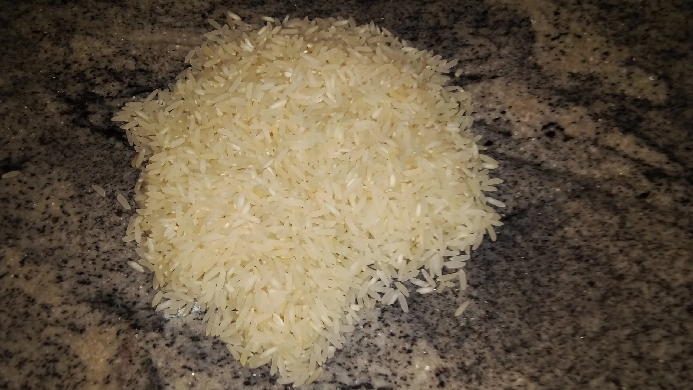
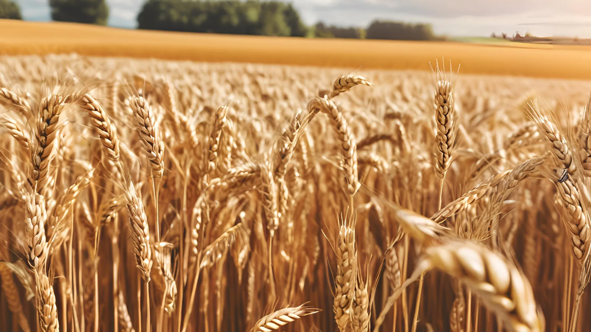

Arroz
A produção de arroz no Brasil deve somar 10,5 milhões de toneladas em 2024, o que representa um aumento de 2,5% em relação a 2023. A área colhida será 4,5% maior, mas o rendimento médio será 1,9% menor. De acordo com a Companhia Nacional de Abastecimento (Conab), na safra 2023/24 serão produzidos 10,75 milhões de toneladas de arroz no Brasil, colhidos em uma área de 1,563 milhão de hectares. O aumento da produtividade tem contribuído para o aumento da produção nacional.
Milho
A projeção mundial de milho na safra de 2023/2024 está projetada para alcançar 1,22 bilhão de toneladas, representando um aumento significativo de 6% em relação à safra anterior. Os EUA lideram como o maior produtor global do cereal, com quase um terço do total. O Brasil deverá produzir 129,15 milhões de toneladas de milho na safra 2023/23.

Trigo
A produção de trigo no Brasil para 2023 é estimada em 10,5 milhões de toneladas pela Conab. A StoneX calcula que a produção nacional de trigo na safra de 2023/24 chegue ao recorde de 11,3 mihões de toneladas. O Gain Report, do Departamento de Agricultura dos Estados Unidos (USDA), estima a produção de trigo do Brasil em 11 milhões de toneladas no ano comercial 2023/2024. A produção de trigo no mundo deve registrar uma queda na temporada 2023/24, o que pode impactar os mercados internacionais e os preços do trigo.